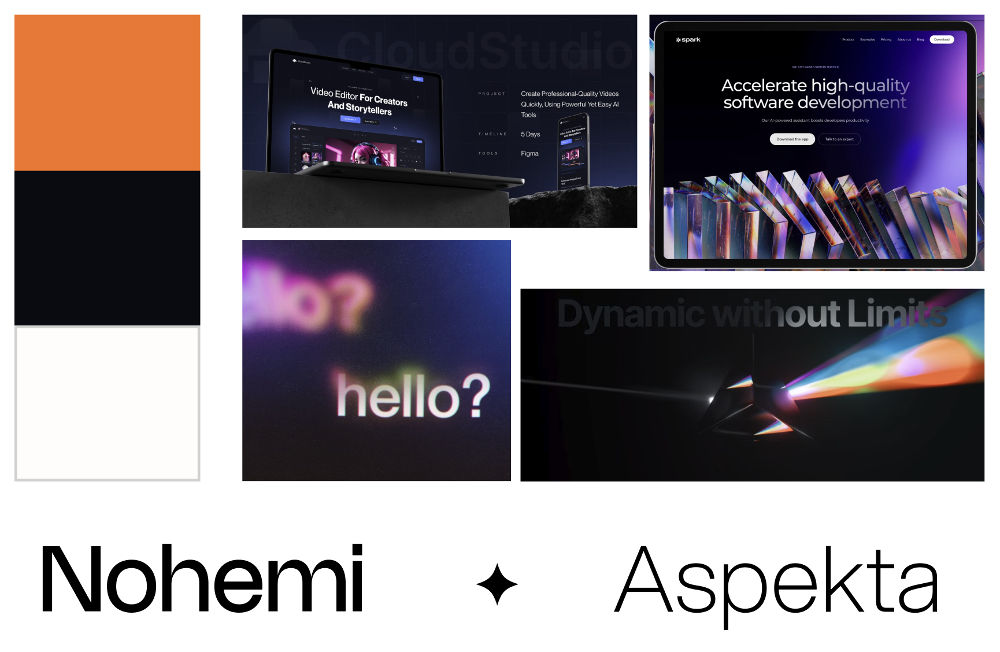

Timeline: Oct 13 2023 - Dec 13 2023
Collide
Fostering genuine professional networking
Problem
Professional networking, such as cold emails, coffee chats, etc oftentimes feel shallow, resulting
in very transactional relationships.
79% of professionals think networking is crucial, yet less than 38% stay in touch with their network.
So... How might we foster genuine professional relationships through mutual connections for young professionals?
79% of professionals think networking is crucial, yet less than 38% stay in touch with their network.
So... How might we foster genuine professional relationships through mutual connections for young professionals?
Solution
Collide bridges the gap between industries and professionals. Leveraging the power of mutual
connections, our app transforms the concept of 'six degrees of separation' into a tangible pathway
for career growth and collaboration. Experience networking redefined, where every connection brings
you closer to your goals.
Landing Page
The landing page depicts the user’s network in a node like web
A star signifies a 2nd degree connection that the app thinks you might be interested in connection with!
A star signifies a 2nd degree connection that the app thinks you might be interested in connection with!
Profiles
Their profile consists of a mix of various achievements and experiences along with some personality questions for you to send an invite to a in-person meet up
Scheduling
Then there is a streamlined scheduling process to meet in-person
The 2nd degree connection would go through a similar process to fulfill their end of the scheduling
The 2nd degree connection would go through a similar process to fulfill their end of the scheduling
Meet-Up!
You can check scheduled meet ups and contact them before you finally meet up in person!
Initial User Flow
Before we started designing, we honed down what we thought our product user flow should be, from the
beginning of being referred a connection, to the end of of an in-person meetup

Lo-Fi's
I designed a lo-fidelity protoype to get some user testing before moving up to Hi-Fi's
User Testing
We made a survey and presented our figma prototype to a variety of users to test and validate our
idea
Design Changes from feedback:
Overhauled the referral system and just allows users to directly connect with 2nd degree connections
Redesigned the overall look of the web
Cleaned up the scheduling process
Overhauled the referral system and just allows users to directly connect with 2nd degree connections
Redesigned the overall look of the web
Cleaned up the scheduling process
Branding

When designing the branding, we liked the idea of combining space themes with the clean tech look, with our network looking like galaxies.
Final Full Showcase
Takeaways
It was a challenge to visualize how one's network could look like while also being inuitive enough to navigate around the space. It might be interesting to see how a peron with a lot more connections would look like. While designing, the mutual referral system was something we thought was a great feature, but through user testing we realized that it was more of a hassle.
Overall, I think that this is an extremely valid problem, as networking is very important in finding opportunities, but cold emailing and contacting can feel ingenuine. This was our way of tackling this issue, but it may be interesting to think of how else to go about it.
Overall, I think that this is an extremely valid problem, as networking is very important in finding opportunities, but cold emailing and contacting can feel ingenuine. This was our way of tackling this issue, but it may be interesting to think of how else to go about it.